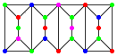
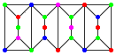

Coloured Configurations
Problem 194
Consider graphs built with the units A:  and B:
and B:  , where the units are glued along
the vertical edges as in the graph .
, where the units are glued along
the vertical edges as in the graph .
A configuration of type (a,b,c) is a graph thus built of a units A and b units B, where the graph's vertices are coloured using up to c colours, so that no two adjacent vertices have the same colour.
The compound graph above is an example of a configuration of type (2,2,6), in fact of type (2,2,c) for all c ≥ 4.
Let N(a,b,c) be the number of configurations of type (a,b,c).
For example, N(1,0,3) = 24, N(0,2,4) = 92928 and N(2,2,3) = 20736.
Find the last 8 digits of N(25,75,1984).